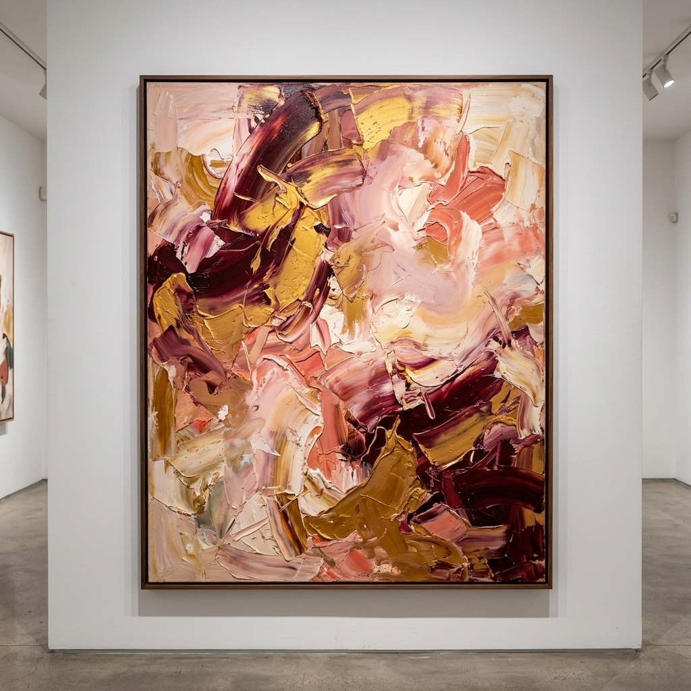

Walking into Marcus Chen's studio feels like stepping inside a thought. The space — a converted warehouse floor in Bushwick, Brooklyn — is a riot of colour and contradiction: pristine white-washed walls interrupted by great swaths of paint, half-finished canvases leaning against every surface, and everywhere the smell of linseed oil and raw pigment.
Chen himself is a contradiction too. Reserved in person, almost quiet, he produces work that screams — large-scale abstractions of savage beauty that regularly command six figures at auction. We met on a Tuesday morning, the light coming in low and warm through the north-facing skylights he had insisted on when taking the lease.
The Role of Failure
"Every painting starts as a failure," he tells me, pouring coffee from a pot that has been burning for what looks like hours. "If it works immediately, I don't trust it. Something too easy is usually too shallow." He gestures at a large canvas to his left — a storm of burgundy and gold, partially resolved. "That one has been failing for six weeks. It's getting somewhere now."
"Every painting starts as a failure. If it works immediately, I don't trust it. Something too easy is usually too shallow." — Marcus Chen
This philosophy of productive failure runs through Chen's entire practise. In his early career, he spent two years producing nothing he would show publicly — destroyed canvases, abandoned series, entire notebooks of work that went nowhere. It was, he says now, the best education he ever had.
On Creative Block
What about block? "I don't believe in it," he says flatly. "What people call creative block is usually fear. Fear of making something bad. Once you accept that bad paintings are part of the process — that they're necessary — the block dissolves. You stop needing each piece to justify your existence."

The Question of Influence
Chen's work is frequently positioned within a lineage running from the Abstract Expressionists through Anselm Kiefer and forward. He's comfortable with the comparison, but sceptical of its usefulness. "Influence is inevitable," he says. "You absorb everything you've ever seen. The question isn't whether you're influenced, but whether you've made the influence your own."
His own synthesis is unmistakable once you know it — the geological depth of colour, the sense of layers deposited over time, the violence followed by extraordinary quiet. These are paintings that seem to be remembering something.
Eleanor Whitfield
Gallery Director, Lumière Gallery
Eleanor is the founding director of Lumière Gallery and has been writing about contemporary art for fifteen years. Her interviews have appeared in Artforum, frieze, and The Art Newspaper.